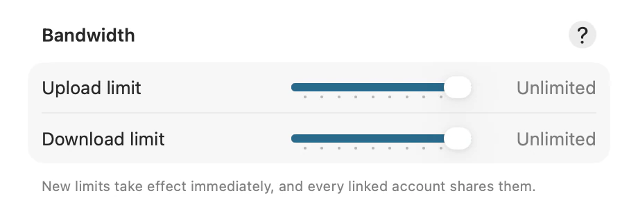

A large upload can take a connection over entirely. Zephyr can be held to a rate you choose, in each direction.

Click Zephyr in the menu bar, then click Settings…
Scroll to Bandwidth.
Drag the Upload limit or Download limit slider.
The rate it’s set to is shown beside it. The stops run from 250 kB/s at the bottom of its travel up to 100 MB/s, and then Unlimited at the top. There is no stop below 250 kB/s.
New limits take effect immediately — a transfer already running slows down rather than waiting to finish. There is nothing to save.
Note: A limit belongs to this Mac, not to one account. With several accounts linked they share it, so two accounts syncing at once stay under the rate you set between them rather than each taking all of it.
A metered network is one that costs you to use: a personal hotspot, a connection macOS reads as costly, or one you have put in Low Data Mode. Zephyr holds back on those, and the Metered Networks section is where you say how far. It stays folded up until you click it.
Click Zephyr in the menu bar, then click Settings…
Click Metered Networks.
Drag the Transfer limit slider. It starts at 250 kB/s.
Unlike the sliders above it, this one rate caps uploads and downloads alike, and only while you are on a network that costs something. It caps the limits above rather than replacing them, so whichever is lower is what you get.
Switch on Keep indexing if this Mac’s connection is fine to use.
Zephyr otherwise waits for a cheaper network before it indexes your Dropbox or checks for changes — the work nobody asked for. Files you open still download either way, on any network.
Note: Low Data Mode always holds indexing back, whatever Keep indexing says. Switching it on is an instruction you gave macOS, where “costly” is a guess macOS made — and only the guess is yours to overrule.
Upload is the one worth limiting on most home connections, where it is much the narrower of the two and where a video call shares it.
Download rarely needs a limit, since Zephyr only downloads what you open.
If you want Zephyr to stop entirely rather than go slowly, pause it instead — see Pause syncing.